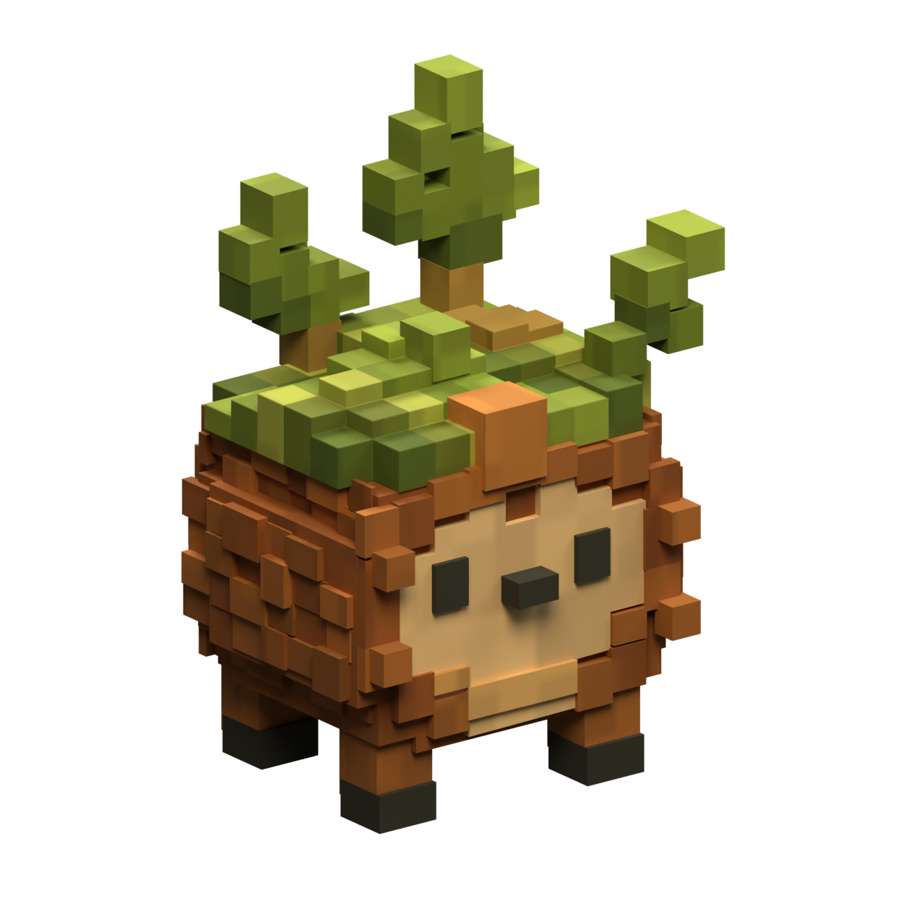
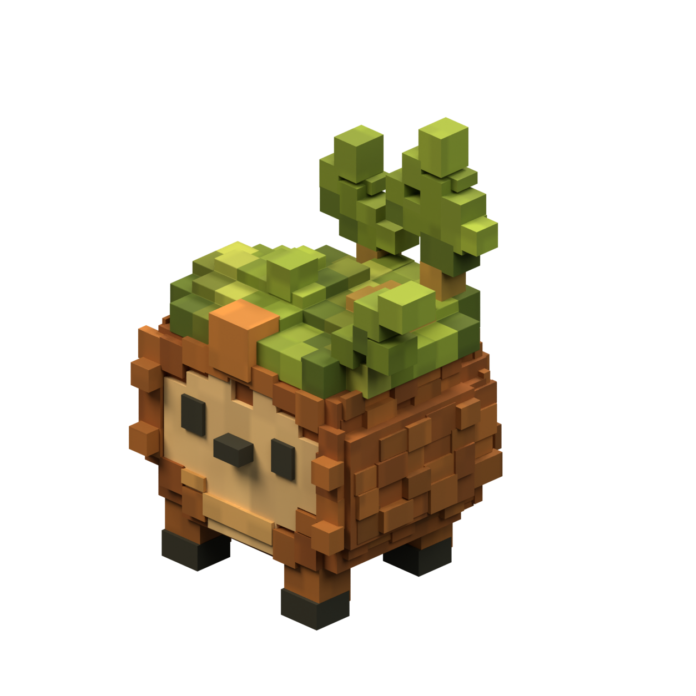
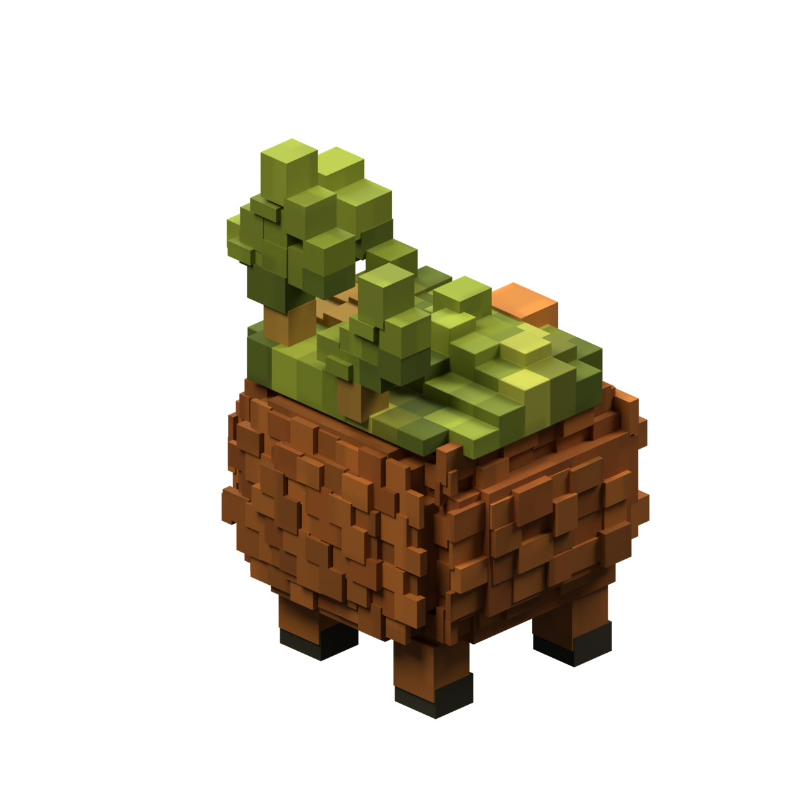
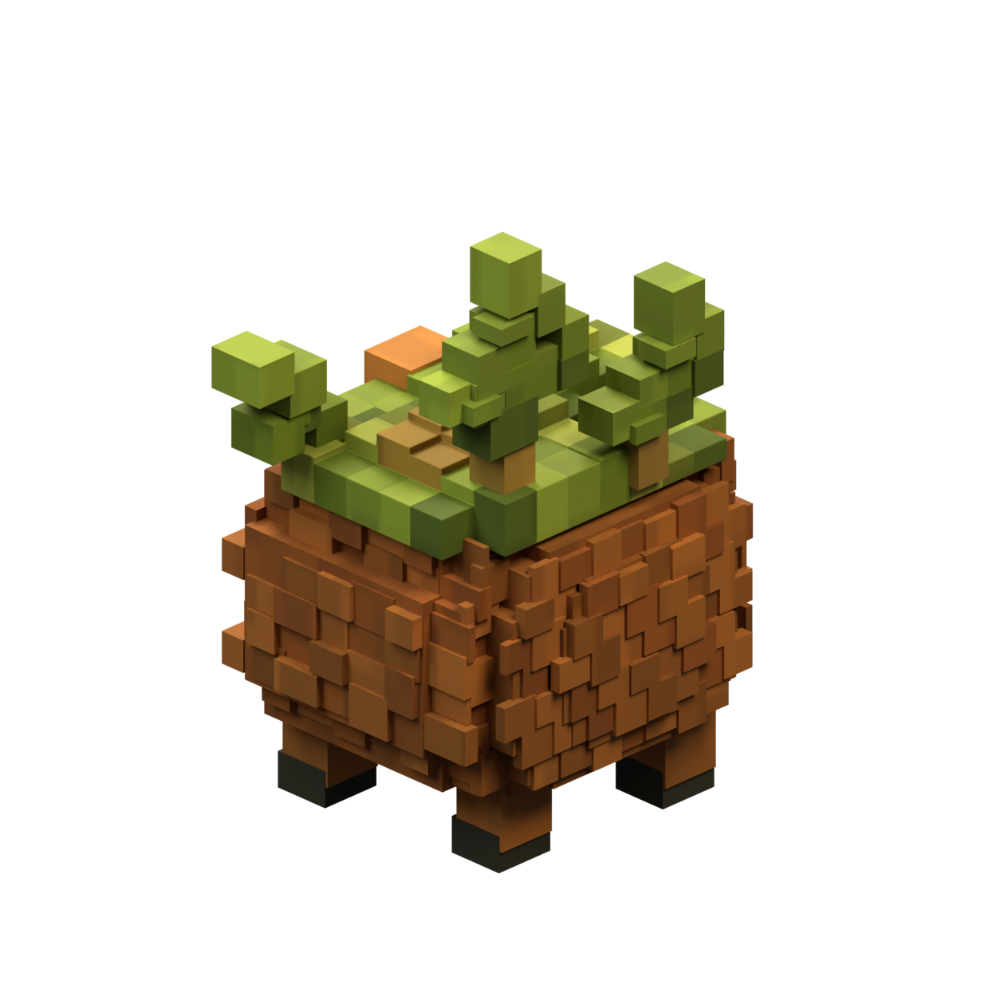
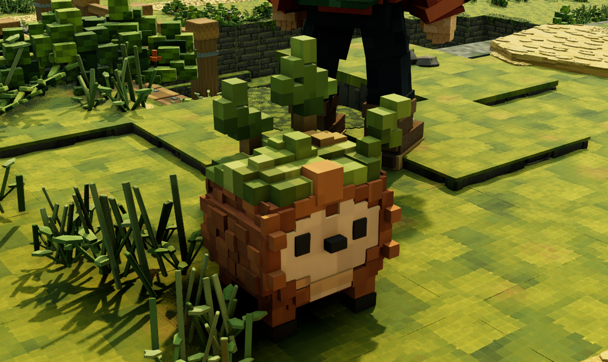
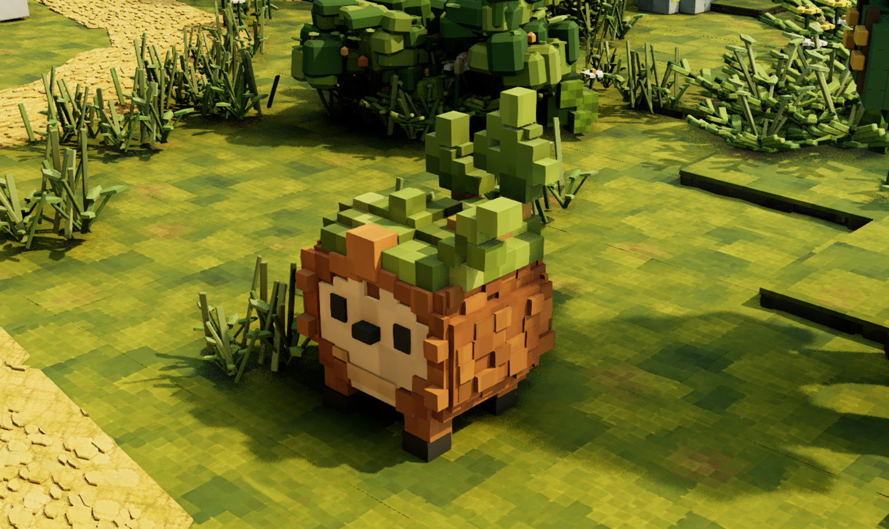
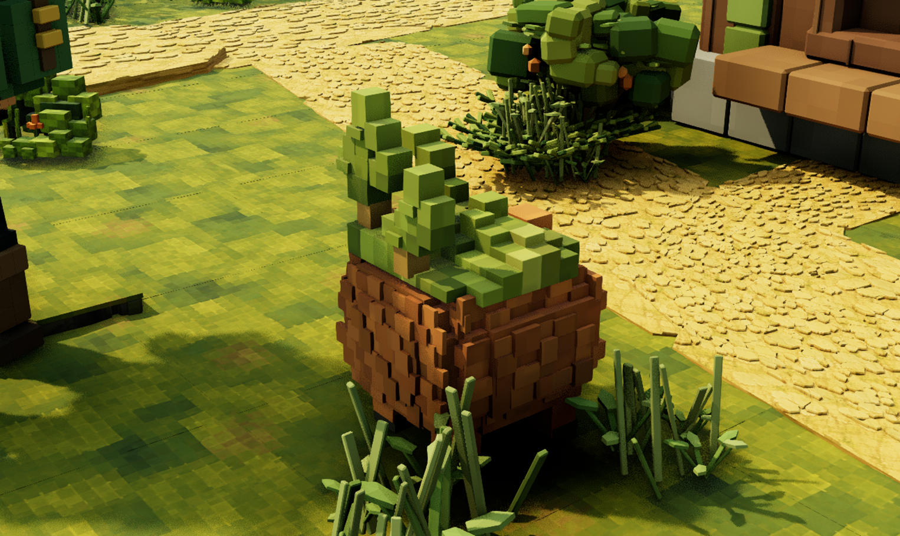
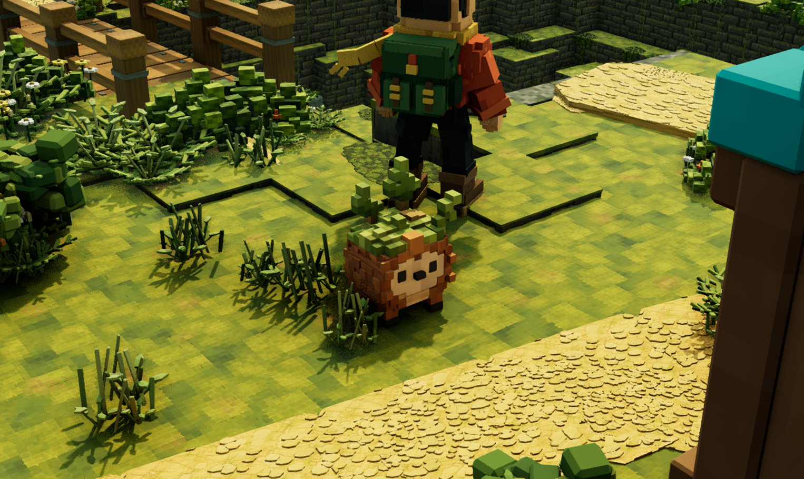

Brambit is now a physical Blender source with an asymmetric moss crown, exposed stems, a deeper forehead block, stepped body, tan face and belly, charcoal eyes and nose, four short legs and three asymmetrical leafy shoots. Five closed volumes retain 271 hidden editable construction blocks. Each leafy shoot now uses planar boundary quads instead of complex Boolean polygons, removing the diagonal shading artifacts in the checked studio views. All three shoots are individually connected closed solids and preserve their authored bounds within 1.1 micrometres. The model exports to 46,160 triangles with one opaque, nonmetallic material and three packed PNG8 maps. The pigment and roughness maps now include restrained block variation, sampled through planar UVs across the modeled surfaces. Microscopic Boolean slivers were cleaned from the crown and body before beveling; every authored boundary face now has usable UV area. The feet have been narrowed and repositioned, and the legs shortened. Three visible lower foot corners project within one pixel of approximate landmarks read from the concept; this checks only those corners. The normal Blender project reopened independently. It is saved in HomesteadBlender at 74.78 cm tall, on courtyard grass near the existing explorer. Twenty imported sole samples across four feet match the source and clear the uneven ground by at most 3.28 mm after map reload. This is an initial physical model with substantial fidelity work remaining.







